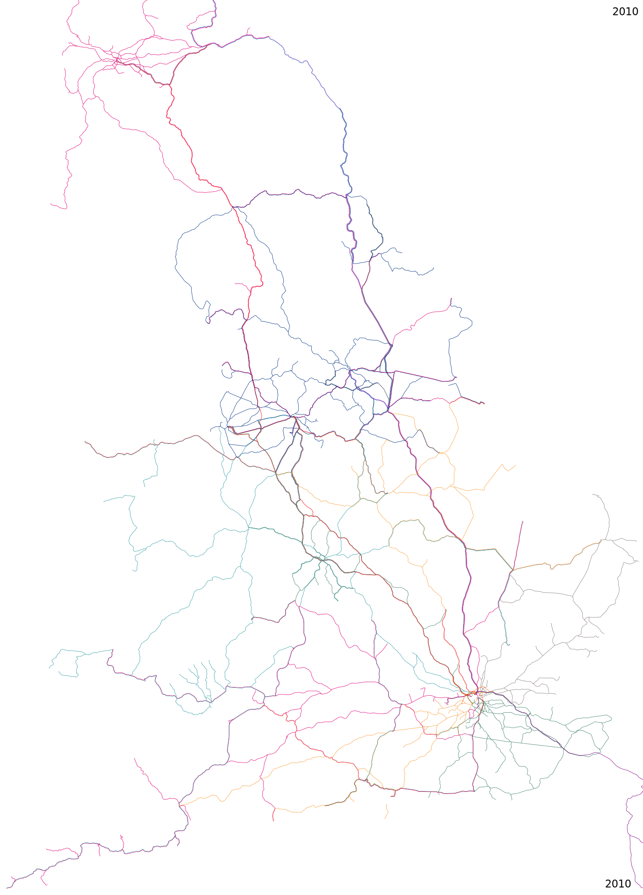
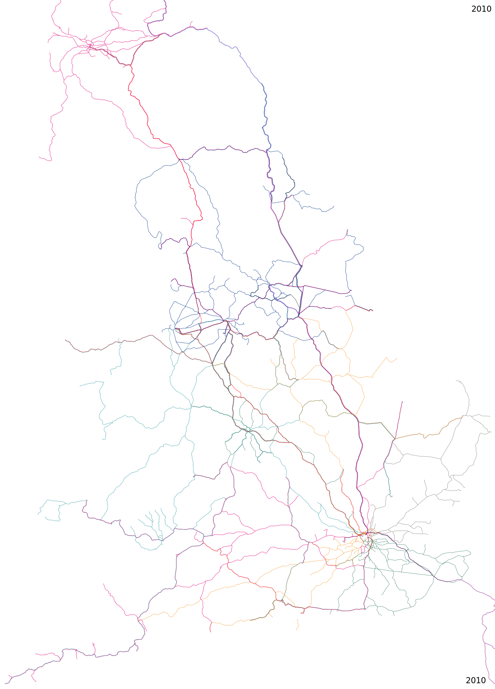

25 years earlier (or press a) ---
25 years later (or press s)
click here to animate
25 years earlier (or press a) --- 25 years later (or press s)
click here to show present-day labels
Showing rail lines with at least three trains each weekday. Lines coloured by operator (key).
Local tramways (without priority at road crossings) and horse-drawn lines not shown.
Scale: ≈ 100 km (approximately 5 CSS pixels per km)
Please send any corrections or questions to threestationsquare at gmail dot com.
 
